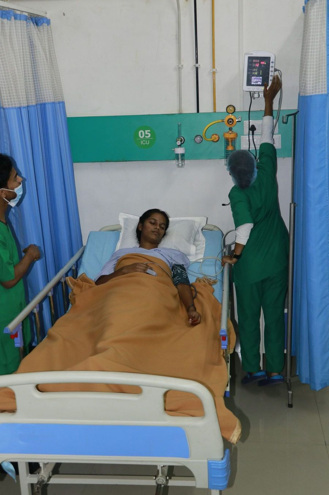

Your first stop for most illnessesज़्यादातर बीमारियों के लिए पहला पड़ाव
General Medicine looks after adults with illnesses that don't need an operation — from a few days of fever to long-term conditions like diabetes, high blood pressure, thyroid and heart disease.जनरल मेडिसिन उन वयस्कों का इलाज करता है जिनकी बीमारी में ऑपरेशन की ज़रूरत नहीं — कुछ दिनों के बुखार से लेकर डायबिटीज़, हाई बीपी, थायरॉइड और दिल की बीमारी जैसी लंबी बीमारियों तक।
In Bihar, seasonal fevers such as typhoid, malaria and dengue are common, and many people live with sugar or BP without knowing it. Our physicians find the cause with the right tests, explain the treatment clearly, and plan follow-up so the illness stays under control.बिहार में टाइफ़ाइड, मलेरिया और डेंगू जैसे मौसमी बुखार आम हैं, और बहुत लोग बिना जाने शुगर या बीपी के साथ जीते हैं। हमारे फ़िज़िशियन सही जाँच से कारण ढूँढते हैं, इलाज साफ़ समझाते हैं, और फ़ॉलो-अप तय करते हैं ताकि बीमारी नियंत्रण में रहे।
When illness becomes serious, patients are admitted to our wards or ICU without leaving the hospital. Lab tests run 24×7, and X-ray and ultrasound are in the same building.बीमारी गंभीर होने पर मरीज़ अस्पताल छोड़े बिना वार्ड या ICU में भर्ती होते हैं। लैब जाँच 24×7 होती है, और एक्स-रे व अल्ट्रासाउंड उसी इमारत में हैं।

Conditions we treatहम इनका इलाज करते हैं
Conditions we treat every dayजिन बीमारियों का हम रोज़ इलाज करते हैं
Book a visit if you noticeये दिखे तो डॉक्टर को दिखाएँ
- Fever for more than 3 days3 दिन से ज़्यादा बुखार
- Constant tiredness, weight loss or loss of appetiteलगातार थकान, वज़न घटना या भूख न लगना
- Frequent thirst and urinationबार-बार प्यास और पेशाब
- Headaches or dizziness with high BP readingsहाई बीपी के साथ सिरदर्द या चक्कर
- Cough for more than 2 weeks2 हफ़्ते से ज़्यादा खांसी
- Swelling of feet or breathlessness on walkingपैरों में सूजन या चलने पर सांस फूलना
What to bringक्या साथ लाएँ
- Aadhaar or another photo IDआधार या कोई फ़ोटो पहचान पत्र
- Ayushman card, if you have oneआयुष्मान कार्ड, अगर हो
- Old prescriptions, reports and X-raysपुराने पर्चे, रिपोर्ट और एक्स-रे
- A list of medicines you take nowअभी ली जा रही दवाओं की सूची
- A family member, if the patient is very unwellमरीज़ ज़्यादा बीमार हो तो परिवार का कोई सदस्य
Diagnosis and treatment in one placeजाँच और इलाज एक ही जगह
OPD consultationओपीडी परामर्श
Check-up, diagnosis and a clear treatment plan.जाँच, निदान और साफ़ इलाज योजना।
Blood testsखून की जाँच
Sugar, kidney, liver, thyroid and more — 24×7.शुगर, किडनी, लिवर, थायरॉइड आदि — 24×7।
X-ray & ultrasoundएक्स-रे व अल्ट्रासाउंड
Imaging in-house, with portable X-ray for bed-bound patients.अस्पताल में ही इमेजिंग, बिस्तर वाले मरीज़ों के लिए पोर्टेबल एक्स-रे।
Admission & ICUभर्ती व ICU
Ward care, and ICU when illness becomes serious.वार्ड में इलाज, और गंभीर होने पर ICU।
Follow-up on videoवीडियो पर फ़ॉलो-अप
Review reports with your doctor without travelling.बिना आए डॉक्टर से रिपोर्ट दिखाएँ।
ECGECG
Heart tracing for chest pain and heart check-ups.सीने में दर्द व दिल की जाँच के लिए ECG।
What happens, step by stepक्या होता है, कदम-दर-कदम
- Book or walk inबुक करें या सीधे आएँBook on WhatsApp or call 99428 15500. Walk-ins are welcome; Emergency never needs a booking.व्हाट्सऐप पर बुक करें या 99428 15500 पर कॉल करें। सीधे भी आ सकते हैं; इमरजेंसी के लिए बुकिंग नहीं चाहिए।
- Registrationरजिस्ट्रेशनRegister at reception with an ID. Ayushman card holders are guided to the Ayushman desk.पहचान पत्र के साथ रिसेप्शन पर रजिस्ट्रेशन। आयुष्मान कार्ड वालों को आयुष्मान डेस्क पर भेजा जाता है।
- Consultationडॉक्टर से परामर्शThe doctor examines you, listens to your history and explains the next steps.डॉक्टर जाँच करते हैं, आपकी बात सुनते हैं और आगे के कदम समझाते हैं।
- Tests in-houseअस्पताल में ही जाँचLab, X-ray and ultrasound in the same building, so reports come quickly.लैब, एक्स-रे और अल्ट्रासाउंड उसी इमारत में, ताकि रिपोर्ट जल्दी मिले।
- Treatment & follow-upइलाज व फ़ॉलो-अपMedicines from the 24×7 pharmacy, admission if needed, and a follow-up plan.24×7 फ़ार्मेसी से दवाएँ, ज़रूरत हो तो भर्ती, और फ़ॉलो-अप की योजना।
Don't wait for OPD if there isइनमें ओपीडी का इंतज़ार न करें
- Chest pain or breathlessnessसीने में दर्द या सांस फूलना
- Very high fever with confusionतेज़ बुखार के साथ बेहोशी जैसी हालत
- Very high or very low sugarबहुत ज़्यादा या बहुत कम शुगर
Experienced specialists, every dayअनुभवी विशेषज्ञ, हर दिन
Doctor schedules change from day to day. Call or WhatsApp 99428 15500 for today's doctor and OPD timings.डॉक्टरों का समय रोज़ बदल सकता है। आज के डॉक्टर व ओपीडी समय के लिए 99428 15500 पर कॉल या व्हाट्सऐप करें।
Simple steps that helpआसान उपाय जो मदद करते हैं
Check sugar and BP yearlyहर साल शुगर व बीपी जाँचें
After 30, a yearly check catches problems early.30 के बाद हर साल की जाँच से बीमारी जल्दी पकड़ में आती है।
Safe waterसाफ़ पानी
Boiled or filtered water prevents typhoid and diarrhoea.उबला या फ़िल्टर पानी टाइफ़ाइड और दस्त से बचाता है।
Stop mosquito bitesमच्छरों से बचें
Use nets and remove standing water to prevent dengue and malaria.मच्छरदानी लगाएँ और जमा पानी हटाएँ, डेंगू-मलेरिया से बचें।
Don't stop medicines on your ownदवा अपने आप बंद न करें
BP and sugar medicines work only when taken every day.बीपी और शुगर की दवा तभी असर करती है जब रोज़ ली जाए।
Covered under Ayushman Bharat at AHS.AHS में आयुष्मान भारत के अंतर्गत शामिल।
Eligible families can get treatment in this department without paying. Bring your Ayushman card or Aadhaar.पात्र परिवार इस विभाग में बिना पैसे इलाज करा सकते हैं। आयुष्मान कार्ड या आधार साथ लाएँ।
Frequently askedअक्सर पूछे जाने वाले सवाल
Do I need to be fasting for blood tests?क्या खून की जाँच के लिए खाली पेट आना है?
Some tests, like fasting sugar and lipid profile, need 8–12 hours of fasting. Call us and we'll tell you for your test.कुछ जाँचों (जैसे फ़ास्टिंग शुगर, लिपिड) के लिए 8–12 घंटे खाली पेट रहना होता है। कॉल करें, हम बता देंगे।
Can I get my sugar and BP checked regularly?क्या मैं नियमित शुगर और बीपी जाँच करा सकता हूँ?
Yes. Book an OPD visit, or ask for a home visit through our Home Care and Elder Care services.हाँ। ओपीडी बुक करें, या होम केयर व एल्डर केयर सेवा से घर पर जाँच कराएँ।
Do you treat dengue and typhoid?क्या डेंगू और टाइफ़ाइड का इलाज होता है?
Yes. We test for them in our 24×7 lab and admit patients who need fluids or close monitoring.हाँ। हमारी 24×7 लैब में जाँच होती है और जिन्हें ड्रिप या निगरानी चाहिए उन्हें भर्ती करते हैं।
Is General Medicine covered under Ayushman Bharat?क्या जनरल मेडिसिन आयुष्मान भारत में शामिल है?
Yes. General Medicine is covered under Ayushman Bharat at AHS for eligible families.हाँ। AHS में पात्र परिवारों के लिए जनरल मेडिसिन आयुष्मान भारत में शामिल है।